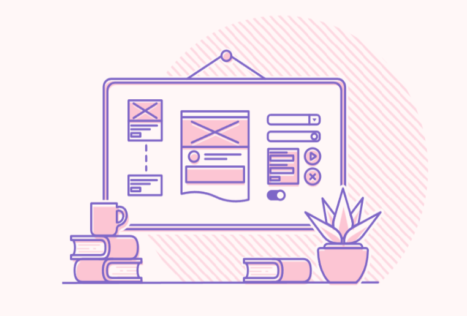
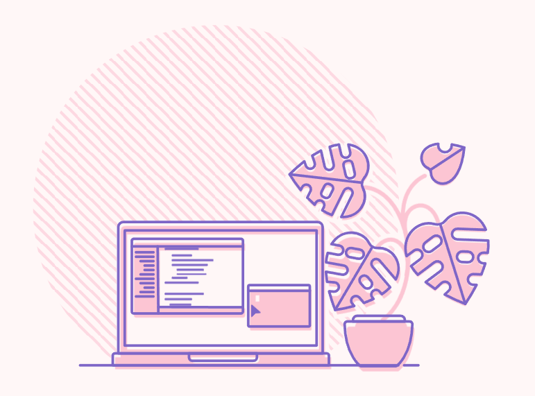
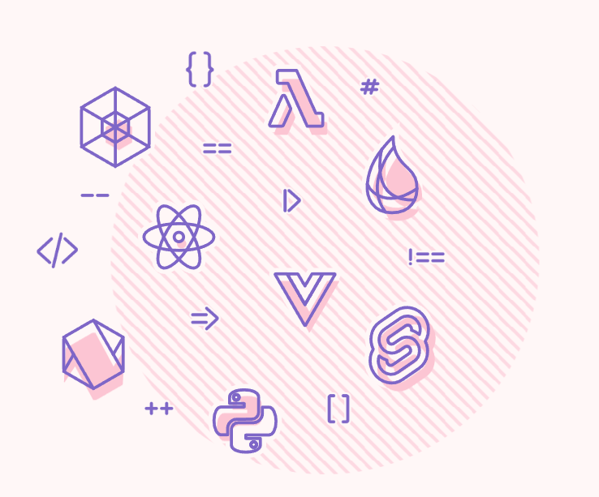

About my work .
I work with forward-thinking people to design and build interactive, accessible websites and products . From working on projects for likes of Aardman Animations, UNHCR , RNLI , and Honda, to working at startups in Tokyo, I've devoted more than a decade to making the web a little bit brighter .
S C R O L LConsidered development .
No two projects are the same and I take a pragmatic approach to each job I take on, focussing on delivering work that is as accessible and optimised as possible.
More than a decade of experience building complex interfaces means that I'm happy to deliver anything from single-page apps to scaleable design systems. I can help you identify the most appropriate technology for your project and, whilst I love a good framework, you can be sure that I will never use tech for tech's sake.


Code Choreography .
I sweat the little details that bring a design to life. But, whether it's full-on WebGL or a UI interaction, animation isn’t just about looking cool - Good interaction design grounds an interface with a sense of space and logic.
I combine nuanced timing and motion with a deep understanding of browser rendering to deliver logical interactions that are both full of character and outrageously smooth.
Server-side is my jam(stack) .
Beyond front-end development, I'm a JAMstack specialist. Cloud CMS platforms, lambda functions, site-generators - Whatever your requirements, I'm happy to help you plan, build and deliver a JAMstack project that's fast, secure and reliable.
If JAMstack isn't your thing, I'm equally at home developing for other server-side technologies. If you need help putting together an application or API with Node.js and Express, or Go with PostgreSQL, then I've got your back.

Let's build something better .
I strongly believe that designers and developers have a responsibility to make sure that what we are building does no harm and I try to be as ethical as I can in taking on projects.
If your organisation represents online gambling, payday loans, big tobacco, or mines and monetises personal data, then I am probably not the best fit for your project. Due to its extremely wasteful energy consumption, I don't take on projects using crypto technology. Similarly, due to its questionable data-provenance, I also avoid working with generative AI . I'm not one to completely write off a technology but I can't conscionably work with either in their current form so, if your project hinges on either, I'm not your guy.
All that said, if you are looking for help building something that promotes sustainability, diversity, or generally aims to make a positive impact, then let’s talk.